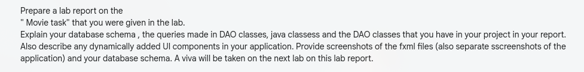
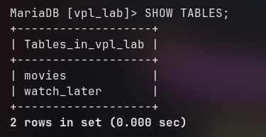
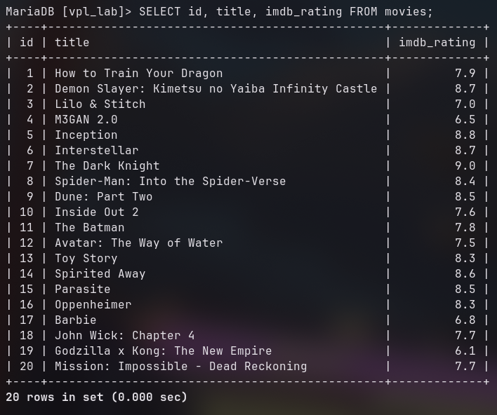
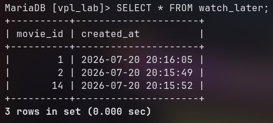
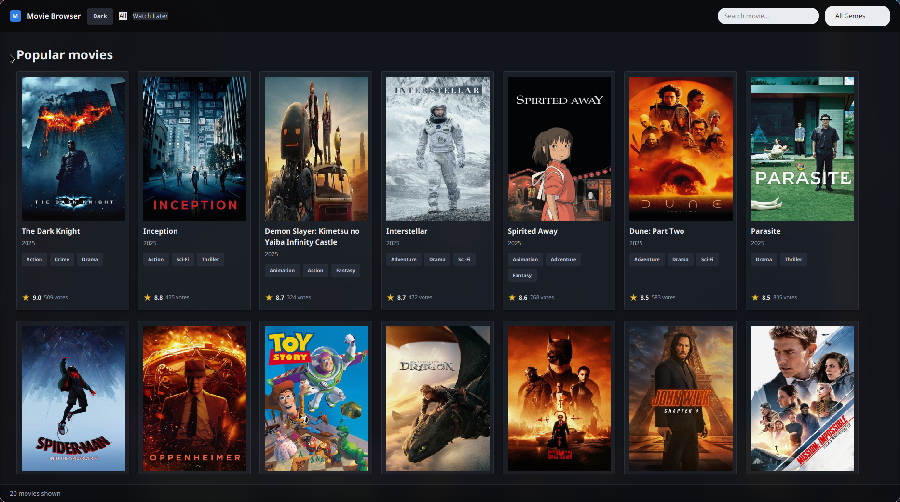
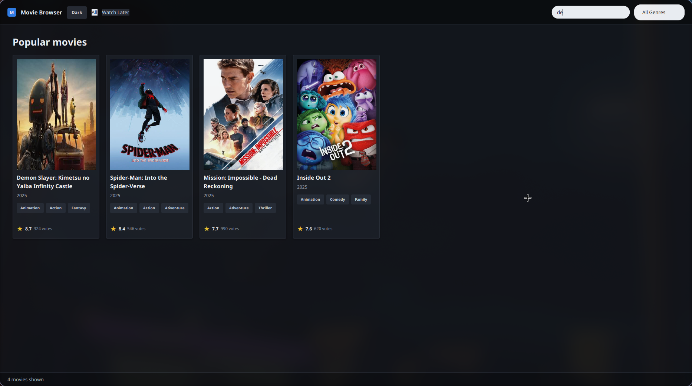
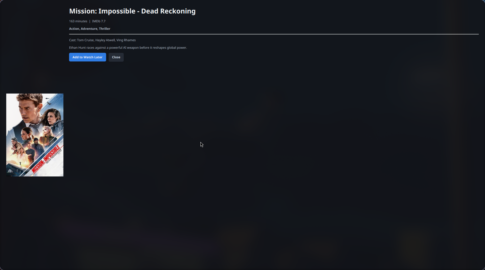
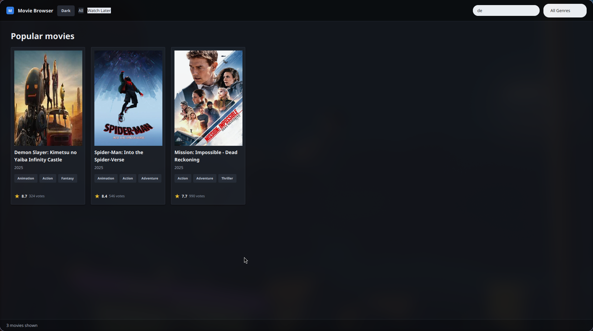

Project: Movie Browser with JavaFX, DAO Classes, and MariaDB
Database: vpl_lab
Module: Lab9 / DatabaseServerProject
The lab task was to prepare a movie browsing application and explain the database schema, DAO classes, Java classes, database queries, dynamically added UI components, FXML files, application screenshots, and database schema evidence.

Movie Scout is a JavaFX desktop application that displays a collection of movies from a MariaDB database. The application supports browsing all movies, searching by movie title, filtering by genre, viewing movie details, and adding or removing movies from a Watch Later list.
The project is divided into two main parts:
| Part | Description |
|---|---|
DatabaseServerProject |
Initializes the vpl_lab database, creates tables, and seeds the movie records. |
src/application |
JavaFX client application. It loads movies through DAO classes and builds the movie browsing UI. |
The database contains two tables: movies and watch_later.
The movies table stores all movie information. The watch_later
table stores the selected movie IDs and references the movies table.
Relationship:
movies.id 1 --- 0..1 watch_later.movie_id
Each watch-later row belongs to exactly one movie. The foreign key uses
ON DELETE CASCADE, so if a movie is deleted, its watch-later record is also deleted.
| Column | Type | Constraint | Purpose |
|---|---|---|---|
id | INT | Primary key, auto increment | Unique movie identifier. |
title | VARCHAR(160) | Not null, unique | Movie title. |
genres | VARCHAR(180) | Not null | Comma-separated movie genres. |
cast_members | VARCHAR(260) | Not null | Main cast list. |
duration_minutes | INT | Not null | Runtime in minutes. |
imdb_rating | DECIMAL(3,1) | Not null | IMDb rating shown in movie cards and details. |
summary | TEXT | Not null | Movie description. |
poster_url | VARCHAR(500) | Not null | Poster image URL loaded by JavaFX. |
| Column | Type | Constraint | Purpose |
|---|---|---|---|
movie_id | INT | Primary key, foreign key to movies(id) | Selected movie. |
created_at | TIMESTAMP | Default current timestamp | Time when the movie was added to Watch Later. |
private void createTables() throws SQLException {
String moviesSql = """
CREATE TABLE IF NOT EXISTS movies (
id INT AUTO_INCREMENT PRIMARY KEY,
title VARCHAR(160) NOT NULL UNIQUE,
genres VARCHAR(180) NOT NULL,
cast_members VARCHAR(260) NOT NULL,
duration_minutes INT NOT NULL,
imdb_rating DECIMAL(3,1) NOT NULL,
summary TEXT NOT NULL,
poster_url VARCHAR(500) NOT NULL
)
""";
String watchLaterSql = """
CREATE TABLE IF NOT EXISTS watch_later (
movie_id INT PRIMARY KEY,
created_at TIMESTAMP DEFAULT CURRENT_TIMESTAMP,
CONSTRAINT fk_watch_later_movie
FOREIGN KEY (movie_id) REFERENCES movies(id)
ON DELETE CASCADE
)
""";
}
This code is in DatabaseServerProject/src/server/MovieSeedDAO.java.
It creates the two required tables if they do not already exist.

movies and watch_later tables.
movies table.
watch_later table.
DBConnection centralizes JDBC connection creation. Both the database server module
and the JavaFX client use JDBC to connect to the local MariaDB server. The default database is
vpl_lab.
public static Connection getConnection() throws SQLException {
return DriverManager.getConnection(URL, USER, PASSWORD);
}
MovieSeedDAO prepares the database for the client application. It creates the database,
creates the required tables, inserts seed data, and counts the movies after setup.
public void initializeDatabase() throws SQLException {
createDatabase();
createTables();
seedMovies();
}
The seed query uses INSERT IGNORE. This prevents duplicate records because
title is unique in the movies table.
String sql = """
INSERT IGNORE INTO movies
(title, genres, cast_members, duration_minutes, imdb_rating, summary, poster_url)
VALUES (?, ?, ?, ?, ?, ?, ?)
""";
MovieDAO is used by the JavaFX client to read movie data from the database.
It contains methods for counting movies, searching movies, loading genres, and finding a movie by ID.
Counting movies:
String sql = "SELECT COUNT(*) AS movie_count FROM movies";This query checks whether the database is ready and also provides a count of available movies.
Searching and filtering movies:
SELECT m.id, m.title, m.genres, m.cast_members, m.duration_minutes,
m.imdb_rating, m.summary, m.poster_url,
CASE WHEN wl.movie_id IS NULL THEN FALSE ELSE TRUE END AS watch_later
FROM movies m
LEFT JOIN watch_later wl ON wl.movie_id = m.id
WHERE LOWER(m.title) LIKE LOWER(?)
ORDER BY m.imdb_rating DESC, m.title
The query reads movie data and performs a left join with the watch_later table.
The join allows the application to know whether each movie has already been added to Watch Later.
The LIKE condition is used for title search. If a genre is selected, the DAO adds
another LOWER(m.genres) LIKE LOWER(?) condition. If Watch Later mode is selected,
the DAO adds wl.movie_id IS NOT NULL.
Loading genres:
String sql = "SELECT genres FROM movies ORDER BY genres";The DAO reads genre strings from all movies, splits them by comma in Java, removes duplicates, and sorts them alphabetically before filling the genre combo box.
Finding a movie by ID:
WHERE m.id = ?This prepared statement is used when a movie card is clicked. It loads the selected movie's full detail record and watch-later status.
WatchLaterDAO manages insert and delete operations for the Watch Later list.
String sql = "INSERT IGNORE INTO watch_later (movie_id) VALUES (?)";
This query adds a movie to Watch Later. INSERT IGNORE avoids duplicate insert errors
because movie_id is the primary key.
String sql = "DELETE FROM watch_later WHERE movie_id = ?";This query removes a movie from Watch Later.
| Class | Responsibility |
|---|---|
Main | Launches the JavaFX application. |
MovieScoutApplication | Main JavaFX application class. Loads FXML, wires events, creates movie cards dynamically, opens detail dialogs, and handles errors. |
Movie | Model class that stores movie data such as title, genres, cast, duration, rating, summary, poster URL, and watch-later status. |
MovieDAO | Reads movie data, performs search/filter queries, and maps result sets to Movie objects. |
WatchLaterDAO | Adds and removes movies in the watch_later table. |
DatabaseServerApplication | Runs the database setup process before the client is used. |
MovieSeedDAO | Creates schema and inserts initial movie data. |
The FXML file defines the main layout containers, search field, genre combo box, status label, and empty movie grid. The movie cards themselves are generated dynamically in Java after records are loaded from the database.
movieGrid.getChildren().setAll(
movies.stream().map(this::createMovieCard).toList()
);
Each movie card is created by createMovieCard(Movie movie). The method creates a poster,
title label, year label, genre chips, rating row, and click handler.
VBox card = new VBox(10, posterPane, body, ratingRow);
card.getStyleClass().add("movie-card");
card.setOnMouseClicked(event -> showDetails(movie.getId()));
The genre chips are also dynamic because the code splits each movie's genre string and creates
a new Label for each genre.
for (String genre : movie.getGenres().split(",")) {
Label chip = new Label(genre.trim());
chip.getStyleClass().add("genre-chip");
chips.getChildren().add(chip);
}
The detail view is loaded from movie-detail-view.fxml, but its poster, title, metadata,
genres, cast, summary, and Watch Later button text are filled dynamically from the selected movie.
This file defines the main browser screen. It contains the top bar, theme button, navigation buttons, search field, genre combo box, movie grid, and status bar.
<TextField fx:id="searchField" promptText="Search movie..." />
<ComboBox fx:id="genreBox" promptText="All Genres" />
<FlowPane fx:id="movieGrid" hgap="18.0" vgap="22.0" />
<Label fx:id="statusLabel" text="Ready" />This file defines the movie detail dialog layout. Java fills the controls after a movie card is clicked.
<StackPane fx:id="posterSlot" prefHeight="320.0" prefWidth="220.0" />
<Label fx:id="detailTitle" wrapText="true" />
<Label fx:id="detailMeta" />
<Label fx:id="detailGenres" wrapText="true" />
<Button fx:id="detailWatchLaterButton" text="Add to Watch Later" />



watch_later table.The project satisfies the movie browsing task by combining a JavaFX user interface with a MariaDB database backend. The database server module initializes the schema and seed data, while the client uses DAO classes to run prepared SQL queries. The application dynamically generates movie cards, supports live search and filtering, displays detailed movie information, and persists Watch Later selections in the database.